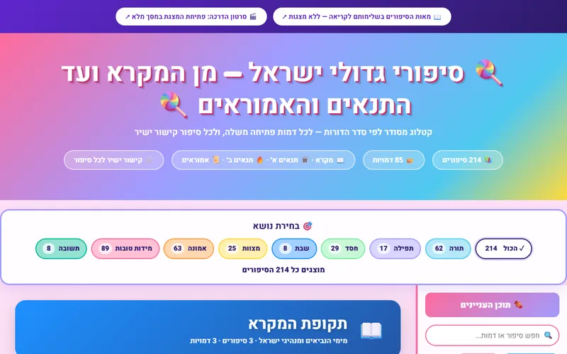
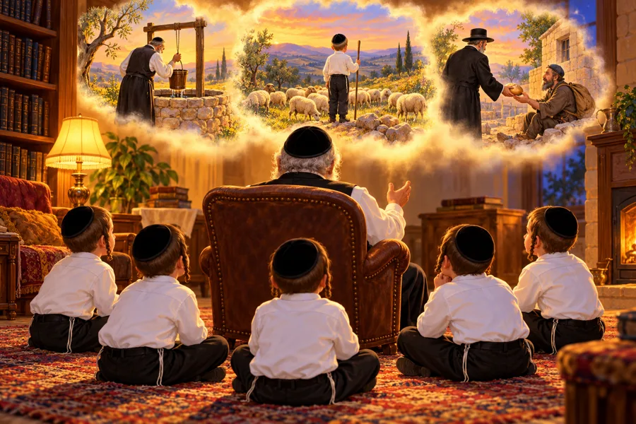
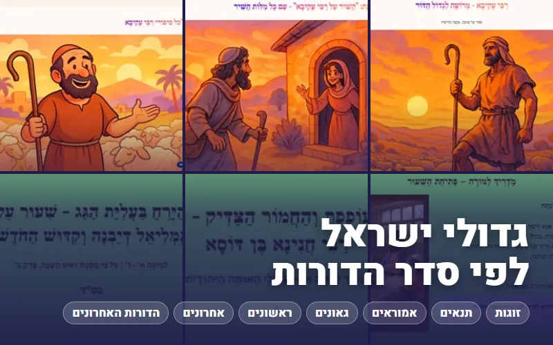
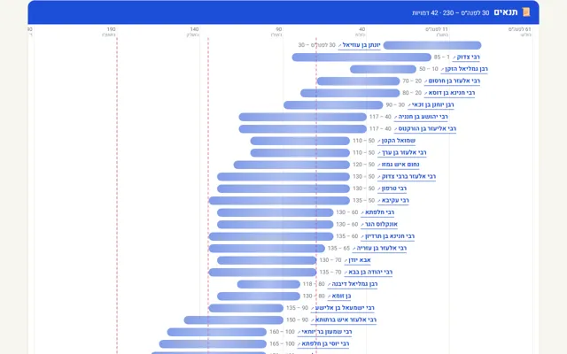
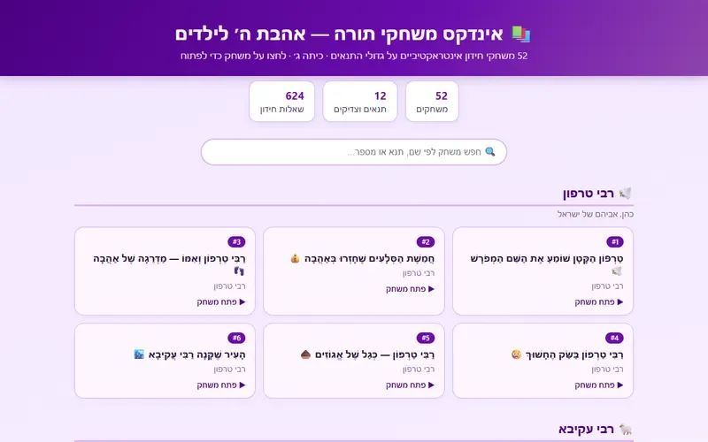
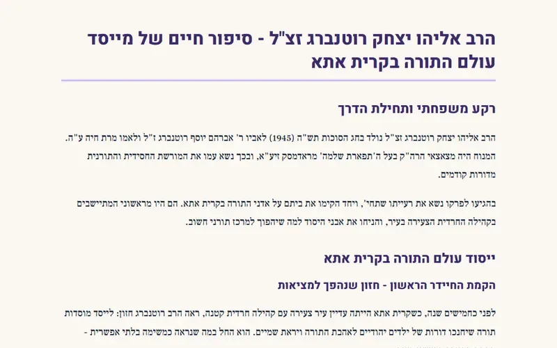

סיפורי תנאים וגדולי ישראל
דף מפתח: קטלוגי המצגות לסיפורי התנאים ולסיפורים החינוכיים, ספרי הסיפורים, גדולי ישראל, ציר הדורות וספר האגדה
13 פריטים
מפתחות: קטלוגים, ספרי סיפורים ומשחקים (10)
🔑 כל סיפורי התנאים וגדולי ישראל, במפתח אחד. כל מצגת לסיפור נמצאת באחד משני קטלוגי המצגות (התנאים והאמוראים, או הסיפורים החינוכיים), ולצידם ספרי הסיפורים, קטלוג גדולי ישראל, ציר הדורות, ספר האגדה והמשחקים. סיפורים כתובים, שירים וסיפורי אמונה וגבורה – בעמוד „סיפורי אמונה וגבורה”; ביוגרפיות והספדים – בעמוד „תולדות אדם”.
מצגות לסיפורי התנאים והאמוראים – קטלוג
366 מצגות לכיתות ב׳–ד׳ על סיפורי חכמי ימי בית שני, התנאים והאמוראים – מתוך גדולי ישראל לדורותיהם, הסיפורים החי…

כה עשו תנאינו – סיפורי התנאים והאמוראים לפי סדר הדורות
ספר הסיפורים: מאות סיפורי התנאים והאמוראים לפי סדר הדורות, ולכל סיפור מצגת, הסיפור לקריאה, מדריך למורה, דף עבו…

מצגות לסיפורים חינוכיים – קטלוג
330 מצגות מנוקדות לכיתות ב׳–ד׳, מצגת לכל סיפור – סיפורי המקרא, הגאונים, הראשונים והאחרונים ועד גדולי דורנו, סי…
גדולי ישראל לדורותיהם – ספר הסיפורים
332 סיפורים על גדולי ישראל לפי סדר הדורות – מהזוגות והתנאים ועד גדולי דורנו. כל סיפור מנוקד לסיפור בעל פה עם ה…

גדולי ישראל לפי סדר הדורות – קטלוג חומרים
כ-4,750 חומרים על כ-190 גדולי ישראל – מהזוגות והתנאים, דרך האמוראים, הגאונים, הראשונים והאחרונים ועד הדורות הא…

ציר הדורות – מאברהם אבינו ועד דורנו
מפת הדורות: באיזו שנה ובאיזו תקופה חי כל אחד – האבות, הנביאים, הזוגות, התנאים, האמוראים, הגאונים, הראשונים, הא…
ספר האגדה – ששת החלקים, עם איורים
ספר האגדה של ביאליק ורבניצקי במלואו – 823 קטעים מסיפורי חז״ל והמדרשים, עם ביאורים, קישור ישיר לכל קטע ומפתח של…

משחקים על סיפורי התנאים – 52 חידונים
52 משחקי חידון אינטראקטיביים על 12 תנאים וצדיקים: רבי טרפון, רבי עקיבא, חוני המעגל, הלל ושמאי ועוד – 624 שאלות…
סיפורי אמונה וגבורה – סיפורים, שירים ומאמרים
סיפורי צדיקים ואמונה בכתב, סיפורי התנאים בכתב, סיפורי אמונה וגבורה, שירים ופיוטים על גדולי ישראל – הכול בעמוד …

תולדות אדם – כתיבת ביוגרפיות והספדים למשפחה ולקהילת קרית אתא
ביוגרפיות, הספדים וסיפורי חיים של רבני קרית אתא ומשפחות הקהילה, ומדריכים לכתיבת תולדות ההורים והנפטרים